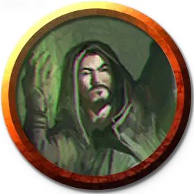

Профессор увядания Визерблума
Witherbloom Professor of Decay
Маленький или Средний Гуманоид (Друид), любое мировоззрение

Класс Доспеха 14 (шкурный доспех)
Хиты 105 (14к8 + 42)
Скорость 30 футов
| мод | спас | ||
|---|---|---|---|
| СИЛ | 11 | +0 | +0 |
| ЛОВ | 14 | +2 | +2 |
| ТЕЛ | 16 | +3 | +6 |
| мод | спас | ||
|---|---|---|---|
| ИНТ | 16 | +3 | +6 |
| МДР | 19 | +4 | +7 |
| ХАР | 13 | +1 | +4 |
Навыки Выживание +7, Магия +6, Медицина +7, Природа +6
Сопротивление урону некротическая энергия
Чувства пассивное Восприятие 14
Языки Общий, и ещё четыре любых языка
Опасность 7 (2900 опыта)
Бонус мастерства +3
Особенности
Передача эссенции (1/день). Профессор может наложить заклинание восставший труп [animate dead], используя Мудрость в качестве базовой характеристики.
Действия
Мультиатака. Профессор совершает две атаки Смертельным копьём. Он может заменить одну из атак накладыванием заклинаний.
Смертельное копьё. . Рукопашная или дальнобойная атака заклинанием: +7 к попаданию, досягаемость 5 футов или дистанция 120 футов, одна цель. Попадание: 17 (3к8 + 4) урона некротической энергией, и цель не может восстановить хиты до начала следующего хода профессора.
Импульс эссенции (перезарядка 5-6). Профессор создает высасывающий жизнь вихрь в сфере радиусом 30 футов с центром вокруг себя. Каждое существо по выбору профессора, которое он может увидеть в пределах этой области, должно совершить спасбросок Телосложения Сл 15, получая 23 (5к8) урона некротической энергией при провале или половину этого урона при успехе. После чего профессор восстанавливает 10 хитов. Максимум хитов цели уменьшается на количество, равное полученному урону некротической энергией. Уменьшение хитов длится до тех пор, пока цель не окончит продолжительный отдых. Цель умирает, если этот эффект уменьшает максимум её хитов до 0.
Использование заклинаний. Профессор накладывает одно из следующих заклинаний, используя Мудрость в качестве базовой характеристики (Сл спасброска от заклинаний 15):
• Неограниченно: искусство друидов [druidcraft], уход за умирающим [spare the dying];
• 1/день: преграда жизни [antilife shell], порча [bane], притворная смерть [feign death], разговор с мёртвыми [speak with dead].
Описание
Профессора увядания владеют магией, которая высасывает и искажает суть предметов, изучаемых профессорами. Профессора используют собранную эссенцию для подпитки своей магии, лишая жизни и разлагая тела живых, призывая и приказывая мертвым и Нежити, а также накладывая проклятия на своих врагов. В битве они крадут эссенцию своих врагов, чтобы залечивать собственные раны и создавать копья болезненной зеленой энергии, высасывающей жизнь.
Преподаватели Визерблума, поддерживающие разрушительную сторону естественного цикла, учат своих учеников использовать сущность жизни для своих собственных нужд. Профессора увядания разгадывают тайны смерти и перехода распада, и они учат, что конец любой жизни - это актив, который ждет, чтобы его использовали.
УЧЁНЫЕ ВИЗЕРБЛУМа
Факультет Визерблум изучает магию, присущую естественному циклу жизни и смерти. Профессора Визерблума подходят к философии с разных сторон, причем одна методология фокусируется на увядании, а другая - на росте.